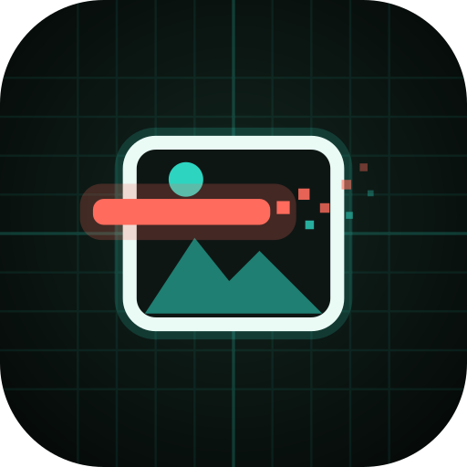
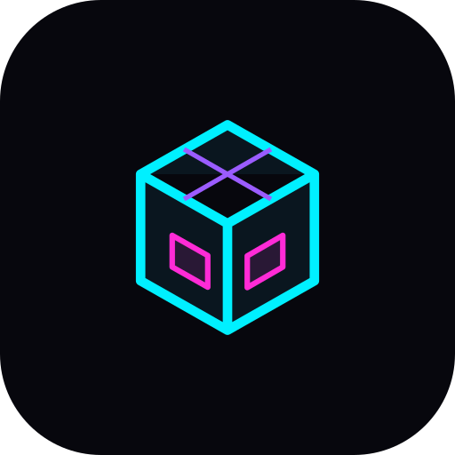

F-Droid repository · auto-updates · no account
CYBER
DROID
Every Cybercore app, one tap, kept up to date.
Add this repository to F-Droid (or Droid-ify, Neo Store) and get Cybercore apps with automatic updates, straight from the source. The APKs are the exact signed releases published on GitHub, each re-verified against its developer certificate before it's listed.
Repository URL
https://cybercoretech.github.io/fdroid/repo
Signing fingerprint (SHA-256)
DE3718769E4C4BE6E26344C7031B88FA9671AF25EA957981552EC420E34FF3C3

- On your phone: tap ADD TO F-DROID, or scan the QR code with the F-Droid app (Settings → Repositories → +).
- Check the fingerprint matches
DE37 1876 … 4FF3 C3, then confirm. - Search for CyberVault, Cybermeta or Holodrive Photos and install. Updates arrive automatically.
01 / In the repository
Three apps,
zero trackers.
Kotlin + Compose on the outside, shared Rust cores on the inside. Each app links to its source, its own site and its releases.
CYBERVAULT
Offline password vault with Keysmith built in. Same vault format as the desktop app. No internet permission.

CYBERMETA
See what your photos give away (GPS, camera, dates) and share clean copies. No internet permission.

HOLODRIVE PHOTOS
Gallery, uploads and Keysmith-protected share links for your self-hosted Holodrive server.
02 / Trust model
Two signatures,
both checked.
F-Droid verifies the repository index signature on every update; Android verifies every APK update against the developer key it was first installed with.
RELEASE
Each app is built and signed by its developer key. CyberVault's key never leaves the maintainer's machine.
VERIFY
Before listing, every APK's SHA-256 and signing certificate are re-checked against the published release.
INDEX
fdroidserver builds the index, signed with the repo key (DE37…F3C3), also held only on the maintainer's machine.
UPDATE
Your phone checks the index signature, then Android checks the APK signature matches the installed app.
- Same APKs as GitHub: installing from here, Obtainium or the GitHub release is interchangeable; updates work across all three.
- Not the main F-Droid catalog: these builds are signed by Cybercore, not built by F-Droid. Main-catalog listings may follow once builds are reproducible.
03 / Theme matrix
Pick your
signal.
Every Cybercore palette from the shared schema, plus this repository's signature mashups.